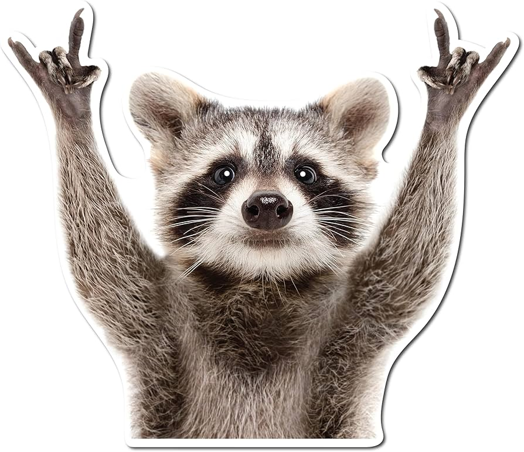

Racoon Francisco Oliveiro Martinez
Ingeniero en Alimentos
Información Personal
- Lugar de Nacimiento: Cartagena, Colombia
- Fecha de Nacimiento: 19/11/2000
- Lugar de Vivienda: Bogotá, Colombia
- Celular: +57 3113787400
- e-mail: elracoonfrancisco@hotmail.net
Resumen
Ingeniero en Alimentos con gran experiencia en desarrollo de productos, seguridad alimentaria y abrir envolturas difíciles. Especialista en optimización de procesos y en encontrar bocadillos sin ser detectado. Apasionado por la innovación en la industria alimentaria, siempre buscando nuevas fórmulas y la manera de hacer que la comida sepa aún mejor. Hábil en trabajo en equipo, resolución de problemas y en convencer a los humanos de que "solo estaba inspeccionando la calidad". Garantizo productos seguros, deliciosos y, si me descuido, con algunas huellas de mapache. 🦝🍕
Experiencia
FoodTech Innovations S.A. (2021 - Actualidad)
- Creación de nuevas recetas y mejora de fórmulas alimenticias sin comprometer la seguridad (ni el sabor).
- Aplicación de normativas de inocuidad para garantizar que ningún alimento "se caiga del camión".
- Pruebas sensoriales rigurosas (con degustaciones incluidas).
NutriMapache S.L. (2018 - 2021)
- Implementación de protocolos para evitar la contaminación cruzada… y evitar que los humanos se quejen.
- Auditorías de calidad para garantizar que los bocadillos sean aptos para todos, incluidos mapaches hambrientos.
- Desarrollo de estrategias para optimizar el almacenamiento de snacks (¡sin que desaparezcan misteriosamente!).
Sabores Nocturnos Ltda. (2015 - 2018)
- Diseño de procesos eficientes para maximizar la producción y minimizar desperdicios (especialmente de galletas).
- Supervisión de líneas de producción asegurando que ningún lote fuera rechazado… o desaprovechado.
- Capacitación del equipo en técnicas avanzadas de apertura de empaques sin hacer ruido.
Ingeniero en Desarrollo de Productos
Especialista en Seguridad e Inocuidad Alimentaria
Ingeniero en Optimización de Procesos
Educación
- Escuela Superior de Ciencias del Snack y Camuflaje (ESCiSC)
Habilidades
- Trabajo en equipo
- Innovación en alimentos
- Resolución de problemas
- Habilidades avanzadas en sigilo para degustaciones extraoficiales